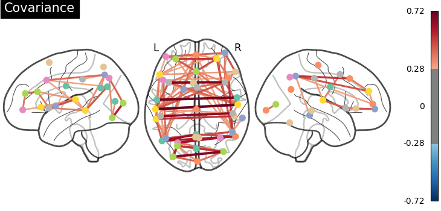
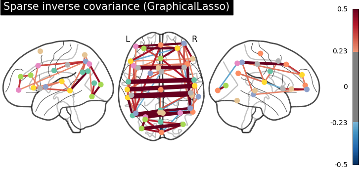
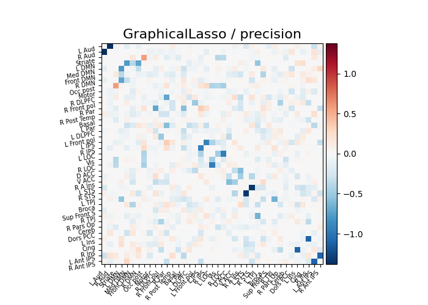
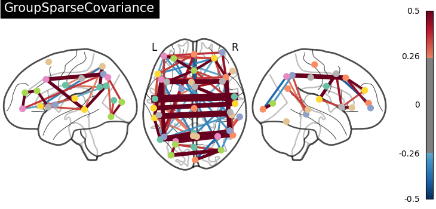
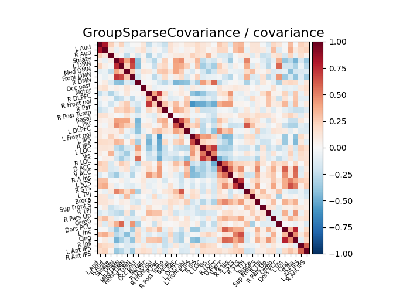
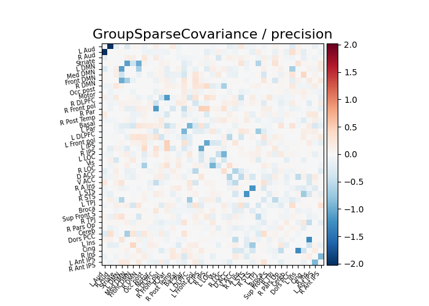

Note
Click here to download the full example code or to run this example in your browser via Binder
9.4.7. Group Sparse inverse covariance for multi-subject connectome¶
This example shows how to estimate a connectome on a group of subjects using the group sparse inverse covariance estimate.
import numpy as np
from nilearn import plotting
n_subjects = 4 # subjects to consider for group-sparse covariance (max: 40)
def plot_matrices(cov, prec, title, labels):
"""Plot covariance and precision matrices, for a given processing. """
prec = prec.copy() # avoid side effects
# Put zeros on the diagonal, for graph clarity.
size = prec.shape[0]
prec[list(range(size)), list(range(size))] = 0
span = max(abs(prec.min()), abs(prec.max()))
# Display covariance matrix
plotting.plot_matrix(cov, cmap=plotting.cm.bwr,
vmin=-1, vmax=1, title="%s / covariance" % title,
labels=labels)
# Display precision matrix
plotting.plot_matrix(prec, cmap=plotting.cm.bwr,
vmin=-span, vmax=span, title="%s / precision" % title,
labels=labels)
9.4.7.1. Fetching datasets¶
from nilearn import datasets
msdl_atlas_dataset = datasets.fetch_atlas_msdl()
rest_dataset = datasets.fetch_development_fmri(n_subjects=n_subjects)
# print basic information on the dataset
print('First subject functional nifti image (4D) is at: %s' %
rest_dataset.func[0]) # 4D data
Out:
/home/circleci/miniconda3/envs/testenv/lib/python3.8/site-packages/numpy/lib/npyio.py:2405: VisibleDeprecationWarning: Reading unicode strings without specifying the encoding argument is deprecated. Set the encoding, use None for the system default.
output = genfromtxt(fname, **kwargs)
First subject functional nifti image (4D) is at: /home/circleci/nilearn_data/development_fmri/development_fmri/sub-pixar123_task-pixar_space-MNI152NLin2009cAsym_desc-preproc_bold.nii.gz
9.4.7.2. Extracting region signals¶
from nilearn import input_data
# A "memory" to avoid recomputation
from joblib import Memory
mem = Memory('nilearn_cache')
masker = input_data.NiftiMapsMasker(
msdl_atlas_dataset.maps, resampling_target="maps", detrend=True,
high_variance_confounds=True, low_pass=None, high_pass=0.01,
t_r=2, standardize=True, memory='nilearn_cache', memory_level=1,
verbose=2)
masker.fit()
subject_time_series = []
func_filenames = rest_dataset.func
confound_filenames = rest_dataset.confounds
for func_filename, confound_filename in zip(func_filenames,
confound_filenames):
print("Processing file %s" % func_filename)
region_ts = masker.transform(func_filename,
confounds=confound_filename)
subject_time_series.append(region_ts)
Out:
[NiftiMapsMasker.fit] loading regions from /home/circleci/nilearn_data/msdl_atlas/MSDL_rois/msdl_rois.nii
/home/circleci/project/nilearn/image/image.py:1207: FutureWarning: The parameter "sessions" will be removed in 0.9.0 release of Nilearn. Please use the parameter "runs" instead.
data = signal.clean(
Processing file /home/circleci/nilearn_data/development_fmri/development_fmri/sub-pixar123_task-pixar_space-MNI152NLin2009cAsym_desc-preproc_bold.nii.gz
________________________________________________________________________________
[Memory] Calling nilearn.image.image.high_variance_confounds...
high_variance_confounds('/home/circleci/nilearn_data/development_fmri/development_fmri/sub-pixar123_task-pixar_space-MNI152NLin2009cAsym_desc-preproc_bold.nii.gz')
__________________________________________high_variance_confounds - 1.1s, 0.0min
________________________________________________________________________________
[Memory] Calling nilearn.input_data.base_masker.filter_and_extract...
filter_and_extract('/home/circleci/nilearn_data/development_fmri/development_fmri/sub-pixar123_task-pixar_space-MNI152NLin2009cAsym_desc-preproc_bold.nii.gz',
<nilearn.input_data.nifti_maps_masker._ExtractionFunctor object at 0x7eff4ea01be0>,
{ 'allow_overlap': True,
'detrend': True,
'dtype': None,
'high_pass': 0.01,
'high_variance_confounds': True,
'low_pass': None,
'maps_img': '/home/circleci/nilearn_data/msdl_atlas/MSDL_rois/msdl_rois.nii',
'mask_img': None,
'smoothing_fwhm': None,
'standardize': True,
'standardize_confounds': True,
't_r': 2,
'target_affine': array([[ 4., 0., 0., -78.],
[ 0., 4., 0., -111.],
[ 0., 0., 4., -51.],
[ 0., 0., 0., 1.]]),
'target_shape': (40, 48, 35)}, confounds=[ array([[-0.174325, ..., -0.048779],
...,
[-0.044073, ..., 0.155444]]),
'/home/circleci/nilearn_data/development_fmri/development_fmri/sub-pixar123_task-pixar_desc-reducedConfounds_regressors.tsv'], sample_mask=None, dtype=None, memory=Memory(location=nilearn_cache/joblib), memory_level=1, verbose=2)
[NiftiMapsMasker.transform_single_imgs] Loading data from /home/circleci/nilearn_data/development_fmri/development_fmri/sub-pixar123_task-pixar_space-MNI152NLin2009cAsym_desc-preproc_bold.nii.gz
[NiftiMapsMasker.transform_single_imgs] Resampling images
[NiftiMapsMasker.transform_single_imgs] Extracting region signals
[NiftiMapsMasker.transform_single_imgs] Cleaning extracted signals
_______________________________________________filter_and_extract - 6.8s, 0.1min
Processing file /home/circleci/nilearn_data/development_fmri/development_fmri/sub-pixar001_task-pixar_space-MNI152NLin2009cAsym_desc-preproc_bold.nii.gz
________________________________________________________________________________
[Memory] Calling nilearn.image.image.high_variance_confounds...
high_variance_confounds('/home/circleci/nilearn_data/development_fmri/development_fmri/sub-pixar001_task-pixar_space-MNI152NLin2009cAsym_desc-preproc_bold.nii.gz')
__________________________________________high_variance_confounds - 1.1s, 0.0min
________________________________________________________________________________
[Memory] Calling nilearn.input_data.base_masker.filter_and_extract...
filter_and_extract('/home/circleci/nilearn_data/development_fmri/development_fmri/sub-pixar001_task-pixar_space-MNI152NLin2009cAsym_desc-preproc_bold.nii.gz',
<nilearn.input_data.nifti_maps_masker._ExtractionFunctor object at 0x7eff4ce67310>,
{ 'allow_overlap': True,
'detrend': True,
'dtype': None,
'high_pass': 0.01,
'high_variance_confounds': True,
'low_pass': None,
'maps_img': '/home/circleci/nilearn_data/msdl_atlas/MSDL_rois/msdl_rois.nii',
'mask_img': None,
'smoothing_fwhm': None,
'standardize': True,
'standardize_confounds': True,
't_r': 2,
'target_affine': array([[ 4., 0., 0., -78.],
[ 0., 4., 0., -111.],
[ 0., 0., 4., -51.],
[ 0., 0., 0., 1.]]),
'target_shape': (40, 48, 35)}, confounds=[ array([[-0.151677, ..., -0.057023],
...,
[-0.206928, ..., 0.102714]]),
'/home/circleci/nilearn_data/development_fmri/development_fmri/sub-pixar001_task-pixar_desc-reducedConfounds_regressors.tsv'], sample_mask=None, dtype=None, memory=Memory(location=nilearn_cache/joblib), memory_level=1, verbose=2)
[NiftiMapsMasker.transform_single_imgs] Loading data from /home/circleci/nilearn_data/development_fmri/development_fmri/sub-pixar001_task-pixar_space-MNI152NLin2009cAsym_desc-preproc_bold.nii.gz
[NiftiMapsMasker.transform_single_imgs] Resampling images
[NiftiMapsMasker.transform_single_imgs] Extracting region signals
[NiftiMapsMasker.transform_single_imgs] Cleaning extracted signals
_______________________________________________filter_and_extract - 6.8s, 0.1min
Processing file /home/circleci/nilearn_data/development_fmri/development_fmri/sub-pixar002_task-pixar_space-MNI152NLin2009cAsym_desc-preproc_bold.nii.gz
________________________________________________________________________________
[Memory] Calling nilearn.image.image.high_variance_confounds...
high_variance_confounds('/home/circleci/nilearn_data/development_fmri/development_fmri/sub-pixar002_task-pixar_space-MNI152NLin2009cAsym_desc-preproc_bold.nii.gz')
__________________________________________high_variance_confounds - 1.1s, 0.0min
________________________________________________________________________________
[Memory] Calling nilearn.input_data.base_masker.filter_and_extract...
filter_and_extract('/home/circleci/nilearn_data/development_fmri/development_fmri/sub-pixar002_task-pixar_space-MNI152NLin2009cAsym_desc-preproc_bold.nii.gz',
<nilearn.input_data.nifti_maps_masker._ExtractionFunctor object at 0x7eff4ce67310>,
{ 'allow_overlap': True,
'detrend': True,
'dtype': None,
'high_pass': 0.01,
'high_variance_confounds': True,
'low_pass': None,
'maps_img': '/home/circleci/nilearn_data/msdl_atlas/MSDL_rois/msdl_rois.nii',
'mask_img': None,
'smoothing_fwhm': None,
'standardize': True,
'standardize_confounds': True,
't_r': 2,
'target_affine': array([[ 4., 0., 0., -78.],
[ 0., 4., 0., -111.],
[ 0., 0., 4., -51.],
[ 0., 0., 0., 1.]]),
'target_shape': (40, 48, 35)}, confounds=[ array([[ 0.127944, ..., -0.087084],
...,
[-0.015679, ..., -0.02587 ]]),
'/home/circleci/nilearn_data/development_fmri/development_fmri/sub-pixar002_task-pixar_desc-reducedConfounds_regressors.tsv'], sample_mask=None, dtype=None, memory=Memory(location=nilearn_cache/joblib), memory_level=1, verbose=2)
[NiftiMapsMasker.transform_single_imgs] Loading data from /home/circleci/nilearn_data/development_fmri/development_fmri/sub-pixar002_task-pixar_space-MNI152NLin2009cAsym_desc-preproc_bold.nii.gz
[NiftiMapsMasker.transform_single_imgs] Resampling images
[NiftiMapsMasker.transform_single_imgs] Extracting region signals
[NiftiMapsMasker.transform_single_imgs] Cleaning extracted signals
_______________________________________________filter_and_extract - 6.7s, 0.1min
Processing file /home/circleci/nilearn_data/development_fmri/development_fmri/sub-pixar003_task-pixar_space-MNI152NLin2009cAsym_desc-preproc_bold.nii.gz
________________________________________________________________________________
[Memory] Calling nilearn.image.image.high_variance_confounds...
high_variance_confounds('/home/circleci/nilearn_data/development_fmri/development_fmri/sub-pixar003_task-pixar_space-MNI152NLin2009cAsym_desc-preproc_bold.nii.gz')
__________________________________________high_variance_confounds - 1.1s, 0.0min
________________________________________________________________________________
[Memory] Calling nilearn.input_data.base_masker.filter_and_extract...
filter_and_extract('/home/circleci/nilearn_data/development_fmri/development_fmri/sub-pixar003_task-pixar_space-MNI152NLin2009cAsym_desc-preproc_bold.nii.gz',
<nilearn.input_data.nifti_maps_masker._ExtractionFunctor object at 0x7eff4ce67310>,
{ 'allow_overlap': True,
'detrend': True,
'dtype': None,
'high_pass': 0.01,
'high_variance_confounds': True,
'low_pass': None,
'maps_img': '/home/circleci/nilearn_data/msdl_atlas/MSDL_rois/msdl_rois.nii',
'mask_img': None,
'smoothing_fwhm': None,
'standardize': True,
'standardize_confounds': True,
't_r': 2,
'target_affine': array([[ 4., 0., 0., -78.],
[ 0., 4., 0., -111.],
[ 0., 0., 4., -51.],
[ 0., 0., 0., 1.]]),
'target_shape': (40, 48, 35)}, confounds=[ array([[-0.089762, ..., -0.062316],
...,
[-0.065223, ..., -0.022868]]),
'/home/circleci/nilearn_data/development_fmri/development_fmri/sub-pixar003_task-pixar_desc-reducedConfounds_regressors.tsv'], sample_mask=None, dtype=None, memory=Memory(location=nilearn_cache/joblib), memory_level=1, verbose=2)
[NiftiMapsMasker.transform_single_imgs] Loading data from /home/circleci/nilearn_data/development_fmri/development_fmri/sub-pixar003_task-pixar_space-MNI152NLin2009cAsym_desc-preproc_bold.nii.gz
[NiftiMapsMasker.transform_single_imgs] Resampling images
[NiftiMapsMasker.transform_single_imgs] Extracting region signals
[NiftiMapsMasker.transform_single_imgs] Cleaning extracted signals
_______________________________________________filter_and_extract - 6.8s, 0.1min
9.4.7.3. Computing group-sparse precision matrices¶
from nilearn.connectome import GroupSparseCovarianceCV
gsc = GroupSparseCovarianceCV(verbose=2)
gsc.fit(subject_time_series)
try:
from sklearn.covariance import GraphicalLassoCV
except ImportError:
# for Scitkit-Learn < v0.20.0
from sklearn.covariance import GraphLassoCV as GraphicalLassoCV
gl = GraphicalLassoCV(verbose=2)
gl.fit(np.concatenate(subject_time_series))
Out:
[Parallel(n_jobs=1)]: Using backend SequentialBackend with 1 concurrent workers.
[GroupSparseCovarianceCV.fit] Log-likelihood on test set is decreasing. Stopping at iteration 2
[GroupSparseCovarianceCV.fit] Log-likelihood on test set is decreasing. Stopping at iteration 7
[GroupSparseCovarianceCV.fit] Log-likelihood on test set is decreasing. Stopping at iteration 0
[Parallel(n_jobs=1)]: Done 1 out of 1 | elapsed: 1.9s remaining: 0.0s
[GroupSparseCovarianceCV.fit] Log-likelihood on test set is decreasing. Stopping at iteration 2
[GroupSparseCovarianceCV.fit] Log-likelihood on test set is decreasing. Stopping at iteration 0
[GroupSparseCovarianceCV.fit] Log-likelihood on test set is decreasing. Stopping at iteration 2
[GroupSparseCovarianceCV.fit] Log-likelihood on test set is decreasing. Stopping at iteration 0
[GroupSparseCovarianceCV.fit] Log-likelihood on test set is decreasing. Stopping at iteration 1
[GroupSparseCovarianceCV.fit] Log-likelihood on test set is decreasing. Stopping at iteration 0
[GroupSparseCovarianceCV.fit] Log-likelihood on test set is decreasing. Stopping at iteration 2
[GroupSparseCovarianceCV.fit] Log-likelihood on test set is decreasing. Stopping at iteration 6
[GroupSparseCovarianceCV.fit] Log-likelihood on test set is decreasing. Stopping at iteration 0
[Parallel(n_jobs=1)]: Done 5 out of 5 | elapsed: 9.6s finished
[GroupSparseCovarianceCV.fit] [GroupSparseCovarianceCV] Done refinement 1 out of 4
[Parallel(n_jobs=1)]: Using backend SequentialBackend with 1 concurrent workers.
[GroupSparseCovarianceCV.fit] Log-likelihood on test set is decreasing. Stopping at iteration 3
[GroupSparseCovarianceCV.fit] Log-likelihood on test set is decreasing. Stopping at iteration 6
[GroupSparseCovarianceCV.fit] Log-likelihood on test set is decreasing. Stopping at iteration 1
[GroupSparseCovarianceCV.fit] Log-likelihood on test set is decreasing. Stopping at iteration 0
[Parallel(n_jobs=1)]: Done 1 out of 1 | elapsed: 2.0s remaining: 0.0s
[GroupSparseCovarianceCV.fit] Log-likelihood on test set is decreasing. Stopping at iteration 4
[GroupSparseCovarianceCV.fit] Log-likelihood on test set is decreasing. Stopping at iteration 0
[GroupSparseCovarianceCV.fit] Log-likelihood on test set is decreasing. Stopping at iteration 3
[GroupSparseCovarianceCV.fit] Log-likelihood on test set is decreasing. Stopping at iteration 0
[GroupSparseCovarianceCV.fit] Log-likelihood on test set is decreasing. Stopping at iteration 0
[GroupSparseCovarianceCV.fit] Log-likelihood on test set is decreasing. Stopping at iteration 3
[GroupSparseCovarianceCV.fit] Log-likelihood on test set is decreasing. Stopping at iteration 6
[GroupSparseCovarianceCV.fit] Log-likelihood on test set is decreasing. Stopping at iteration 0
[Parallel(n_jobs=1)]: Done 5 out of 5 | elapsed: 16.4s finished
[GroupSparseCovarianceCV.fit] [GroupSparseCovarianceCV] Done refinement 2 out of 4
[Parallel(n_jobs=1)]: Using backend SequentialBackend with 1 concurrent workers.
[GroupSparseCovarianceCV.fit] Log-likelihood on test set is decreasing. Stopping at iteration 5
[GroupSparseCovarianceCV.fit] Log-likelihood on test set is decreasing. Stopping at iteration 1
[GroupSparseCovarianceCV.fit] Log-likelihood on test set is decreasing. Stopping at iteration 1
[GroupSparseCovarianceCV.fit] Log-likelihood on test set is decreasing. Stopping at iteration 1
[Parallel(n_jobs=1)]: Done 1 out of 1 | elapsed: 2.0s remaining: 0.0s
[GroupSparseCovarianceCV.fit] Log-likelihood on test set is decreasing. Stopping at iteration 9
[GroupSparseCovarianceCV.fit] Log-likelihood on test set is decreasing. Stopping at iteration 10
[GroupSparseCovarianceCV.fit] Log-likelihood on test set is decreasing. Stopping at iteration 0
[GroupSparseCovarianceCV.fit] Log-likelihood on test set is decreasing. Stopping at iteration 5
[GroupSparseCovarianceCV.fit] Log-likelihood on test set is decreasing. Stopping at iteration 0
[Parallel(n_jobs=1)]: Done 5 out of 5 | elapsed: 18.4s finished
[GroupSparseCovarianceCV.fit] [GroupSparseCovarianceCV] Done refinement 3 out of 4
[Parallel(n_jobs=1)]: Using backend SequentialBackend with 1 concurrent workers.
[GroupSparseCovarianceCV.fit] Log-likelihood on test set is decreasing. Stopping at iteration 6
[GroupSparseCovarianceCV.fit] Log-likelihood on test set is decreasing. Stopping at iteration 1
[GroupSparseCovarianceCV.fit] Log-likelihood on test set is decreasing. Stopping at iteration 1
[Parallel(n_jobs=1)]: Done 1 out of 1 | elapsed: 2.7s remaining: 0.0s
[GroupSparseCovarianceCV.fit] Log-likelihood on test set is decreasing. Stopping at iteration 10
[GroupSparseCovarianceCV.fit] Log-likelihood on test set is decreasing. Stopping at iteration 11
[GroupSparseCovarianceCV.fit] Log-likelihood on test set is decreasing. Stopping at iteration 5
[GroupSparseCovarianceCV.fit] Log-likelihood on test set is decreasing. Stopping at iteration 0
[GroupSparseCovarianceCV.fit] Log-likelihood on test set is decreasing. Stopping at iteration 0
[Parallel(n_jobs=1)]: Done 5 out of 5 | elapsed: 15.3s finished
[GroupSparseCovarianceCV.fit] [GroupSparseCovarianceCV] Done refinement 4 out of 4
[GroupSparseCovarianceCV.fit] Final optimization
[GroupSparseCovarianceCV.fit] tolerance reached at iteration number 19: 8.789e-04
[Parallel(n_jobs=1)]: Using backend SequentialBackend with 1 concurrent workers.
....[Parallel(n_jobs=1)]: Done 1 out of 1 | elapsed: 0.1s remaining: 0.0s
................[Parallel(n_jobs=1)]: Done 5 out of 5 | elapsed: 1.0s finished
[GraphicalLassoCV] Done refinement 1 out of 4: 1s
[Parallel(n_jobs=1)]: Using backend SequentialBackend with 1 concurrent workers.
....[Parallel(n_jobs=1)]: Done 1 out of 1 | elapsed: 0.2s remaining: 0.0s
................[Parallel(n_jobs=1)]: Done 5 out of 5 | elapsed: 1.1s finished
[GraphicalLassoCV] Done refinement 2 out of 4: 2s
[Parallel(n_jobs=1)]: Using backend SequentialBackend with 1 concurrent workers.
....[Parallel(n_jobs=1)]: Done 1 out of 1 | elapsed: 0.3s remaining: 0.0s
................[Parallel(n_jobs=1)]: Done 5 out of 5 | elapsed: 1.2s finished
[GraphicalLassoCV] Done refinement 3 out of 4: 3s
[Parallel(n_jobs=1)]: Using backend SequentialBackend with 1 concurrent workers.
....[Parallel(n_jobs=1)]: Done 1 out of 1 | elapsed: 0.2s remaining: 0.0s
................[Parallel(n_jobs=1)]: Done 5 out of 5 | elapsed: 1.1s finished
[GraphicalLassoCV] Done refinement 4 out of 4: 4s
[Parallel(n_jobs=1)]: Using backend SequentialBackend with 1 concurrent workers.
[Parallel(n_jobs=1)]: Done 5 out of 5 | elapsed: 0.0s finished
[graphical_lasso] Iteration 0, cost 1.68e+02, dual gap 1.123e+00
[graphical_lasso] Iteration 1, cost 1.68e+02, dual gap -1.664e-03
[graphical_lasso] Iteration 2, cost 1.68e+02, dual gap 1.158e-04
[graphical_lasso] Iteration 3, cost 1.68e+02, dual gap 1.389e-04
[graphical_lasso] Iteration 4, cost 1.68e+02, dual gap 1.530e-04
[graphical_lasso] Iteration 5, cost 1.68e+02, dual gap 1.318e-04
[graphical_lasso] Iteration 6, cost 1.68e+02, dual gap 6.844e-05
GraphicalLassoCV(verbose=2)
9.4.7.4. Displaying results¶
atlas_img = msdl_atlas_dataset.maps
atlas_region_coords = plotting.find_probabilistic_atlas_cut_coords(atlas_img)
labels = msdl_atlas_dataset.labels
plotting.plot_connectome(gl.covariance_,
atlas_region_coords, edge_threshold='90%',
title="Covariance",
display_mode="lzr")
plotting.plot_connectome(-gl.precision_, atlas_region_coords,
edge_threshold='90%',
title="Sparse inverse covariance (GraphicalLasso)",
display_mode="lzr",
edge_vmax=.5, edge_vmin=-.5)
plot_matrices(gl.covariance_, gl.precision_, "GraphicalLasso", labels)
title = "GroupSparseCovariance"
plotting.plot_connectome(-gsc.precisions_[..., 0],
atlas_region_coords, edge_threshold='90%',
title=title,
display_mode="lzr",
edge_vmax=.5, edge_vmin=-.5)
plot_matrices(gsc.covariances_[..., 0],
gsc.precisions_[..., 0], title, labels)
plotting.show()
- 
- 

- 
- 
- 
- 
Total running time of the script: ( 1 minutes 49.726 seconds)